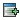
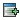

History of Changes

Introduction and explanation of symbols
Changes are sorted  =add,
=add,  =remove, =update
=remove, =update
Version 2005-04 ()
1.2
-
[1.2] thanks to Felix Roethenbacher sitetree generator added in order to have sitetree abstraction within the sitemap Diff
Committed by michi.
-
[1.2] replication to multiple servers by ssh resp. scp added Diff
Committed by michi.
-
[1.2] last modified for sitetree implementation added Diff
Committed by michi.
-
[1.2] sample files for crawling added Diff
Committed by michi.
-
[1.2] delete resource by ssh called from shell script because sshexec does not work in any case Diff
Committed by michi.
-
[1.2] Add ant-contrib license Diff
Committed by antonio.
-
[1.2] Upgrade ant to 1.6.3 Diff
Committed by antonio.
-
[1.2] sitetree is not needed by blog publication Diff
Committed by michi.
-
[1.2] Update jetty to 4.2.23 Diff
Committed by antonio.
- [1.2] sitetree generator declared Diff Committed by michi.
- [1.2] sitetree generator used instead reading from filesystem directly Diff Committed by michi.
- [1.2] sitetree generated by sitetree generator Diff Committed by michi.
- [1.2] hack to workaround failure of build process if build dir does not exist Diff Committed by michi.
- [1.2] commented unnecessary resource Diff Committed by michi.
- [1.2] log messages cleaned Diff Committed by michi.
- [1.2] Javadoc added about the link argument Diff Committed by michi.
- [1.2] getSiteTree deprecated and getTree introduced such it stays backwards compatible Diff Committed by michi.
- [1.2] getSiteTree replaced by getTree because getSiteTree is deprecated Diff Committed by michi.
- [1.2] deprecated getSiteTree replaced by getTree Diff Committed by michi.
- [1.2] deprecated getSiteTree replaced by getTree Diff Committed by michi.
- [1.2] deprecated getSiteTree replaced by getTree Diff Committed by michi.
- [1.2] deprecated getSiteTree replaced by getTree Diff Committed by michi.
- [1.2] deprecated getSiteTree replaced by getTree Diff Committed by michi.
- [1.2] Copy the different attrs of the site tree nodes. Bugs #34298. Thanks to Felix Roethenbacher (Patch http://issues.apache.org/bugzilla/attachment.cgi?id=14618&action=view) Diff Committed by edith.
- [1.2] create pending and delete dir if necessary Diff Committed by michi.
- [1.2] ignore local build properties file Diff Committed by michi.
- [1.2] thanks to Simon Litwan URLs are being transformed into well-formed XML Diff Committed by michi.
- [1.2] thanks to Simon Litwan the title of an image is being transformed into well-formed XML if inserted through BXE Diff Committed by michi.
- [1.2] thanks to Simon Litwan the title of an asset is being transformed into well-formed XML if inserted through BXE Diff Committed by michi.
- [1.2] Point to BXE 1.1 Diff Committed by gregor.
- [1.2] Do not return an array of AbstractRole to enable implementations not derived from AbstractRole. This resolves http://issues.apache.org/bugzilla/show_bug.cgi?id=34290 Thanks to Joachim Breitsprecher. Diff Committed by gregor.
- [1.2] Honour the form-encoding default in Cocoon 2.1.7 (the previous approach kept led to 2 entries for form-encoding..) Diff Committed by gregor.
- [1.2] Removed traces of iso-8859-1 serializers Diff Committed by gregor.
- [1.2] applied patch for bug #34348, thanks to Felix Roethenbacher Diff Committed by andreas.
- [1.2] thanks to Felix and Josias last modified has been implemeneted Diff Committed by michi.
- [1.2] image and asset upload unified thanks to Simon Litwan Diff Committed by michi.
- [1.2] SiteTreeGenerator: use XML namespace for xml:lang attribute, this fixes the display of non-default languages. Thanks to Josias Thoeny. Diff Committed by andreas.
- [1.2] The comments shoul be copied too Diff Committed by edith.
- [1.2] [minor change] removed TODO hint, added some javadocs Diff Committed by andreas.
- [1.2] thanks to Josias Thoeny the link attribute is also updated within the live are when published Diff Committed by michi.
- [1.2] note about mod_jk added Diff Committed by michi.
- [1.2] thanks to Olivier Lustenberger the Javascript error within Firefox should be gone Diff Committed by michi.
- [1.2] Thanks to Simon Litwan. Another minor change in the design. Hide formularfields of the existing asset section if the asset library is empty Diff Committed by edith.
- [1.2] Thanks to Simon Litwan: changes in UploadAction.java, uscase-bxeng.xmap and asset-upload.xsl for error notification after fileupload Diff Committed by edith.
- [1.2] Thanks to Simon Litwan:renamed homonymous formfield, add a bit javascript and a hintsrc/webapp/lenya/xslt/notification/message2xslt.xsl Diff Committed by edith.
- [1.2] Thanks to Simon Litwan: this patch prevents caching the oneFormEditor in the browser. Bug #34414 Diff Committed by edith.
- [1.2] Thanks to Simon Litwan:renamed homonymous formfield, add a bit javascript and a hint Diff Committed by edith.
- [1.2] Replace the Writer, so we can set the encoding to utf-8. Else the default encoding of the platform is taken Diff Committed by edith.
- [1.2] Fix bug#34190: introduction of blank lines, while saving the metadata Diff Committed by edith.
- [1.2] language added such that it can be processed within the global XSLT Diff Committed by michi.
- [1.2] language parameter added and german text added Diff Committed by michi.
- [1.2] source editor link fixed and Xopus edit link added whereas not activated yet because the schema and XSLT is currently missing Diff Committed by michi.
- [1.2] [minor change] applied Jann's suggestions (id=34567) to show ldap id of user; will take a look at trunk as well Diff Committed by jwkaltz.
- [1.2] Updated install instructions Diff Committed by gregor.
- [1.2] Updated version to 1.2.3 Diff Committed by gregor.
- [1.2] libraries updated Diff Committed by michi.
- [1.2] show configuration of crawler fixed Diff Committed by michi.
- [1.2] resolving of paths fixed Diff Committed by michi.
- [1.2] logging fixed Diff Committed by michi.
- [1.2] call of the shellscript removed for crawling Diff Committed by michi.
- [1.2] htdocs dump path improved Diff Committed by michi.
- [1.2] delete resource by shell script instead sshexec Diff Committed by michi.
- [1.2] Fix pipelines Diff Committed by antonio.
1.4
-
[1.4] added version number to revision control, implemented locking for Transactionables Diff
Committed by andreas.
-
[1.4] Strip down admin sitemap Diff
Committed by gregor.
-
[1.4] Introduced lightweigt repository layer using RepositorySource which is resolved by the lenya:// protocol. This allows transparent transaction handling in the source layer. The implementation is currently done using context:// sources, this can be changed to JCR later on. Diff
Committed by andreas.
-
[1.4] introduced Instantiator interface to create instances of publication templates Diff
Committed by andreas.
-
[1.4] display cocoon & server status properly Diff
Committed by andreas.
-
[1.4] added SiteUtil class Diff
Committed by andreas.
-
[1.4] added server status usecase JX template Diff
Committed by andreas.
-
[1.4] migrated forms editor to usecase framework Diff
Committed by andreas.
-
[1.4] Moved XSPPrecompileWrapper to test sources Diff
Committed by gregor.
-
[1.4] moved forms JX template to forms folder, improved error message display Diff
Committed by andreas.
-
[1.4] usecase framework for blog form editor Diff
Committed by andreas.
-
[1.4] ported oneformeditor to usecase framework, removed obsolete HtmlFormSaveAction Diff
Committed by andreas.
-
[1.4] generalized DublinCore to MetaDataManager, using lenya:// sources for asset management Diff
Committed by andreas.
-
[1.4] added UsecaseInvoker Diff
Committed by andreas.
-
[1.4] added InsertAsset usecase Diff
Committed by andreas.
-
[1.4] using usecase framework for BXE image upload Diff
Committed by andreas.
-
[1.4] implementation of DocumentTypeBuilder as an Avalon Service
Diff
Committed by jwkaltz.
-
[1.4] Update jetty to 4.2.23 Diff
Committed by antonio.
-
[1.4] Add ant-contrib license Diff
Committed by antonio.
-
[1.4] Removed admin XSP/XSL Diff
Committed by gregor.
-
[1.4] Removed redirect XSP Diff
Committed by gregor.
-
[1.4] Remove auxiliary files for old-style usecases. Diff
Committed by gregor.
-
[1.4] Remove auxiliary files for old-style usecases. Diff
Committed by gregor.
-
[1.4] Removed global ant tasks Diff
Committed by gregor.
-
[1.4] Removed proxy generator and scheduler sitemap Diff
Committed by gregor.
-
[1.4] removed obsolete forms/oneform editor files Diff
Committed by andreas.
-
[1.4] removed obsolete 1formedit directory Diff
Committed by andreas.
-
[1.4] Update ant to 1.6.3 Diff
Committed by antonio.
- [1.4] avoid NPE when calling TreeSiteManager methods for non-existing tree nodes Diff Committed by andreas.
- [1.4] resolve latest RC versions correctly Diff Committed by andreas.
- [1.4] enabled transactions for workflow history Diff Committed by andreas.
- [1.4] Javadoc added about the link parameter Diff Committed by michi.
- [1.4] in finally block, check if services are not null Diff Committed by andreas.
- [1.4] create build dir by default such that build process does not fail unnecessarily Diff Committed by michi.
- [1.4] removed unit of work from cocoon.xconf Diff Committed by andreas.
- [1.4] use document area for meta data instead of usecase area Diff Committed by andreas.
- [1.4] Do not return an array of AbstractRole to enable implementations not derived from AbstractRole. This resolves http://issues.apache.org/bugzilla/show_bug.cgi?id=34290 Thanks to Joachim Breitsprecher. Diff Committed by gregor.
- [1.4] Removed scheduler logicsheet Diff Committed by gregor.
- [1.4] Reverted move of menus to core (the menu is specific to the default publication) Diff Committed by gregor.
- [1.4] Introduced lightweigt repository layer using RepositorySource which is resolved by the lenya:// protocol. This allows transparent transaction handling in the source layer. The implementation is currently done using context:// sources, this can be changed to JCR later on. Diff Committed by andreas.
- [1.4] Temporary fix for bug 34175 Diff Committed by gregor.
- [1.4] [minor change] corrected XML syntax Diff Committed by jwkaltz.
- [1.4] [minor change] set cocoon-version to 2.1.7 Diff Committed by jwkaltz.
- [1.4] [minor change] set Id for svn back as it was - sorry about that Diff Committed by jwkaltz.
- [1.4] [minor change] replaced System.out by getLogger().debug Diff Committed by andreas.
- [1.4] added locking to create uscases Diff Committed by andreas.
- [1.4] added locking to InvokeWorkflow usecase Diff Committed by andreas.
- [1.4] Publish recursively: Don't publish a document if it's parent is not published Diff Committed by andreas.
- [1.4] Introduced interfaces Versionable, Lockable, and Identifiable. This makes it easier to add the appropriate functionality to a class. Furthermore, a bug re. recursive deactivation was fixed. Diff Committed by andreas.
- [1.4] {page-envelope:area} returns complete area instead of document area Diff Committed by andreas.
- [1.4] Using lenya:// protocol in parameter-doctype.xmap. This way, the resource type is correctly resolved in transactions, even if the real source of a document is not yet created. Diff Committed by andreas.
- [1.4] proper locking when a document is moved or links are rewritten Diff Committed by andreas.
- [1.4] locking added to ChangeLabel usecase Diff Committed by andreas.
- [1.4] [minor change] added tab JX import to addGroup JX template Diff Committed by andreas.
- [1.4] use full page width for admin usecase tabs Diff Committed by andreas.
- [1.4] display site area tab properly Diff Committed by andreas.
- [1.4] disable 'empty trash' when trash is empty Diff Committed by andreas.
- [1.4] Use byte array instead of separate thread to convert DOM to input stream. This avoids the 'pipe closed' exception. Diff Committed by andreas.
- [1.4] refactored site management, fixed delete usecase problems Diff Committed by andreas.
- [1.4] added parameterization for usecases Diff Committed by andreas.
- [1.4] Using usecase handler for BXE usecase. This allows transaction handling. Diff Committed by andreas.
- [1.4] replace admin.xmap by usecases/admin/usecase.xmap Diff Committed by andreas.
- [1.4] add exception to Usecase.advance() Diff Committed by andreas.
- [1.4] usecases throw exception in advance() Diff Committed by andreas.
- [1.4] Moved XSPPrecompileWrapper to test sources Diff Committed by gregor.
- [1.4] Changed shorthand for ResourceNotFound exception to not-found to make error pipelines work again. Diff Committed by gregor.
- [1.4] added functionality to support pessimistic offline lock, fixed RCML path resolving for SourceNodes Diff Committed by andreas.
- [1.4] using revision controller to determine if source node is checked out Diff Committed by andreas.
- [1.4] unit of work: check in all involved resources, not only the changed ones Diff Committed by andreas.
- [1.4] [minor change] added debug message at entry of usecase flow, to facilitate tracing Diff Committed by jwkaltz.
- [1.4] [minor change] UnitOfWork is no longer a service -> do not release it through service manager Diff Committed by jwkaltz.
- [1.4] [minor change] removed reference to non-existent default.css Diff Committed by andreas.
- [1.4] [minor change] removed reference to UnitOfWork.ROLE Diff Committed by andreas.
- [1.4] allow to cancel usecases incl. rollback of the transition, which means that objects are checked in when a usecase uses pessimistic offline lock Diff Committed by andreas.
- [1.4] [minor change] added some debug log messages and documentation Diff Committed by jwkaltz.
- [1.4] [minor change] set svn:keywords for Id on future commits Diff Committed by jwkaltz.
- [1.4] AbstractUsecase: moved commit/rollback to finally clause Diff Committed by andreas.
- [1.4] check for site manager hint != null in DefaultDocument.exists() Diff Committed by andreas.
- [1.4] usecases.js: allow usecase to rollback the transition if an exception was thrown in the flowscript Diff Committed by andreas.
- [1.4] [minor change] use already available publication instead of lookup Diff Committed by jwkaltz.
- [1.4] use request attribute instead of session attribute to store UnitOfWork Diff Committed by andreas.
- [1.4] [minor change] removed no longer existing actions, HTMLFormSaveAction and OneFormEditorSaveAction, so they are not added to sitemap Diff Committed by jwkaltz.
- [1.4] [minor change] enabled using logger in DefaultDocument Diff Committed by jwkaltz.
- [1.4] added support for non-XML repository sources Diff Committed by andreas.
- [1.4] generalized DublinCore to MetaDataManager, using lenya:// sources for asset management Diff Committed by andreas.
- [1.4] using Resource objects in asset mgmt screen Diff Committed by andreas.
- [1.4] [minor change] changed index from i to j in inner loop - I assume this was a typo Diff Committed by jwkaltz.
- [1.4] removed 'usebuffer=false' (accidential check-in) Diff Committed by andreas.
- [1.4] DefaultSiteTree: don't use source's DOM document Diff Committed by andreas.
- [1.4] added mime-type, lastmodified, contentlength to repo sources and assets Diff Committed by andreas.
- [1.4] unit of work: synchronize commit() and rollback() because changes to sources are made Diff Committed by andreas.
- [1.4] [minor change] removed dead code Diff Committed by andreas.
- [1.4] [minor change] removed unused method Diff Committed by andreas.
- [1.4] language added in order to show how the language can also be used within the global layout Diff Committed by michi.
- [1.4] Made DocumentTypeBuilder a service. Diff Committed by jwkaltz.
- [1.4] [minor change] fixed logging usage and missing result retrieval; removed tabs Diff Committed by jwkaltz.
- [1.4] [minor change] added display of LDAP user id when present; fixes bug 34567 Diff Committed by jwkaltz.
- [1.4] [minor change] added copyright notices Diff Committed by jwkaltz.
- [1.4] [minor change] added copyright notices Diff Committed by jwkaltz.
- [1.4] [minor change] corrected parameter description Diff Committed by jwkaltz.
- [1.4] added a comment and a link to the schema for the links resource type Diff Committed by tschlabach.
- [1.4] added a link to the RelaxNG schema to the Avalon service configuration Diff Committed by tschlabach.
- [1.4] [minor change] use template for error messages. Formatting: removed ctrl-Ms Diff Committed by jwkaltz.
- [1.4] [minor change] use template for error messages. Diff Committed by jwkaltz.
- [1.4] [minor change] use template for error messages. Formatting: removed ctrl-Ms Diff Committed by jwkaltz.
- [1.4] [minor change] removed duplicate access to error messages Diff Committed by jwkaltz.
- [1.4] [minor change] use template for error messages, where possible. Formatting: removed ctrl-Ms Diff Committed by jwkaltz.
- [1.4] [minor change] use template for error messages. Formatting: removed ctrl-Ms Diff Committed by jwkaltz.
- [1.4] [minor change] use template for error messages Diff Committed by jwkaltz.
- [1.4] [minor change] fixed to use text in dictionary Diff Committed by jwkaltz.
- [1.4] [minor change] added missing svn property Diff Committed by jwkaltz.
- [1.4] added possibility for parameters in usecase messages, to be used in i18n Diff Committed by jwkaltz.
- [1.4] [minor change] set svn properties Diff Committed by jwkaltz.
- [1.4] added messages with parameters where appropriate Diff Committed by jwkaltz.
Documentation
-
[Documentation] Renamed the "Concepts" section to "Technical Reference"
Diff
Committed by tschlabach.
-
[Documentation] Added a document about WYSIWYG in general. (To be extended and related to Lenya concepts in particular.)
Diff
Committed by tschlabach.
-
[Documentation] Added articles by Jon Linczak Diff
Committed by gregor.
- [Documentation] More live sites added Diff Committed by gregor.
- [Documentation] Updated install instructions for Cocoon 2.1.7 and JDK 1.5 Diff Committed by gregor.
- [Documentation] added docu: section 'view' for the usecase framework, section 'instantiator' for publication templating Diff Committed by andreas.
- [Documentation] added more docs on usecase framework Diff Committed by andreas.
- [Documentation] Rewrote front page of the site and improved the layout. Converted all documents to the document-2.0 DTD. Diff Committed by gregor.
- [Documentation] Removed duplicate description Diff Committed by gregor.
- [Documentation] Improved title Diff Committed by gregor.
Sandbox
-
[Sandbox] patched Xalan added Diff
Committed by michi.
-
[Sandbox] jaas based implementation added Diff
Committed by michi.
-
[Sandbox] moved into Lenya 1.2 itself Diff
Committed by michi.
-
[Sandbox] obsolete Diff
Committed by michi.
-
[Sandbox] replaced by most recent version Diff
Committed by michi.
-
[Sandbox] obsolete Diff
Committed by michi.
- [Sandbox] improved version of JCRSiteTree Diff Committed by michi.
- [Sandbox] thanks to Felix the import works now Diff Committed by michi.
- [Sandbox] deprecated getSiteTree replaced by getTree Diff Committed by michi.
- [Sandbox] upgraded to jaas based version Diff Committed by michi.
- [Sandbox] patch of Felix Roethenbacher added Diff Committed by michi.
- [Sandbox] note about view-workspace added Diff Committed by michi.
- [Sandbox] thanks to Felix archive, etc. has been implemented Diff Committed by michi.
- [Sandbox] thanks to Felix Roethenbacher it's now independent of the default publication Diff Committed by michi.
- [Sandbox] webapp.dir introduced Diff Committed by michi.
- [Sandbox] thanks to Felix the classpath is set correctly such that flowscript works properly Diff Committed by michi.
Site
-
[Site] Added some more remarks to the introduction section of the document.
Diff
Committed by tschlabach.
-
[Site] Diff
Committed by gregor.
-
[Site] Rewrote front page of the site and improved the layout. Converted all documents to the document-2.0 DTD. Diff
Committed by gregor.
-
[Site] Added articles by Jon Linczak Diff
Committed by gregor.
-
[Site] Added a document about WYSIWYG in general. (To be extended and related to Lenya concepts.)
Diff
Committed by tschlabach.
-
[Site] prepare new site Diff
Committed by gregor.
- [Site] Removed duplicate description Diff Committed by gregor.
- [Site] Improved title Diff Committed by gregor.
Contributors to this release
We thank the following people for their contributions to this release.
This is a list of all people who participated as committers:
(andreas), (antonio), (edith), (gregor), (jwkaltz), (michi), (tschlabach).